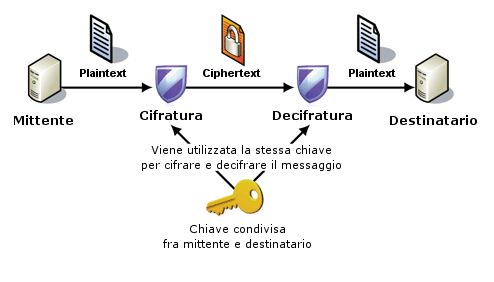
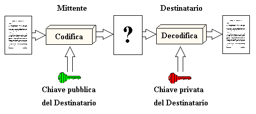

home
Sistemi e reti
In questa materia abbiamo approfondito diversi concetti fondamentali, tra cui il funzionamento dei servizi applicativi di livello 7 e i diversi aspetti legati alla sicurezza
informatica. Quest'ultima può essere di tipo perimetrale, grazie all’uso di dispositivi o protocolli di protezione come i firewall o i server proxy, oppure può riguardare la
riservatezza dei dati, attraverso l’impiego di tecniche di crittografia. Esistono principalmente due tipi di crittografia:
- Crittografia simmetrica: detta anche a chiave segreta, utilizza un'unica chiave condivisa tra mittente e destinatario per cifrare e decifrare i dati.
Alcuni algoritmi noti sono DES, 3DES e AES. È molto veloce ed efficiente, particolarmente adatta per trasmettere grandi quantità di dati, ma risulta meno
sicura se lachiave viene intercettata.

- Crittografia asimmetrica: detta anche a chiave pubblica/privata, utilizza due chiavi diverse: una pubblica per cifrare il messaggio e una privata,
posseduta solo dal destinatario, per decifrarlo. Un esempio di algoritmo asimmetrico è RSA. Questo metodo è molto sicuro, ma più lento e complesso, soprattutto
con grandi volumi di dati.

Per questo motivo, nella pratica si utilizza spesso una combinazione di entrambi i metodi: si cifra la chiave simmetrica con la crittografia asimmetrica durante
l’inizializzazione della comunicazione, e poi si usano algoritmi simmetrici per cifrare i dati veri e propri. In questo modo si ottiene un buon compromesso tra
efficienza e sicurezza, garantendo comunicazioni riservate e performanti.